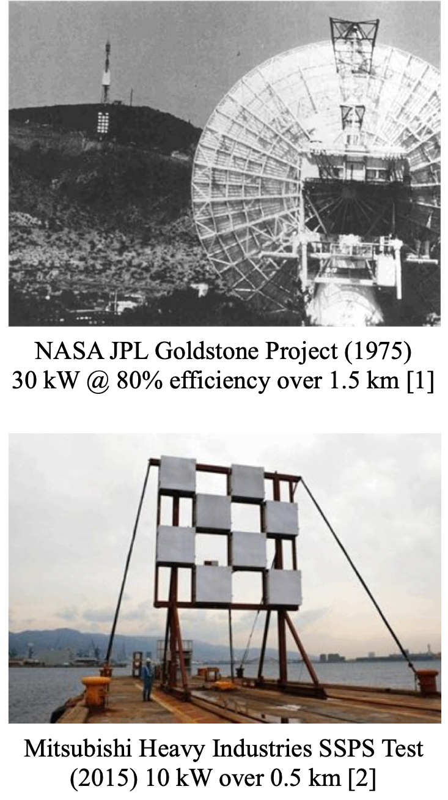
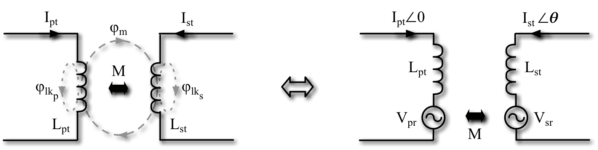

class: title-slide count: false .logo-title[] # Inductive Power Transfer ### Mastering the Fundamentals .TitleAuthor[Duleepa J Thrimawithana] --- layout: true name: template_slide .logo-slide[] .footer[[Duleepa J Thrimawithana](https://www.linkedin.com/in/duleepajt), Department of Electrical, Computer and Software Engineering (2019)] --- name: S1 # The University of Auckland - Highest ranked New Zealand university and 81st in the QS World University Ranking - Over 5,000 staff members and 40,000 students - Nine faculties including Medical & Health Sciences, Engineering, Business & Economics and Science .center[<img src="img/intro/UoAMap.png" height="300">] --- name: S2 # Dept. of Electrical, Computer & Software Eng. .left-column[ - One of the 5 departments in the Faculty of Engineering - Offers 3 undergraduate degree programs - Electrical & Electronics, Computer Systems and Software - Project based teaching - 35+ full-time academic staff members and 15+ post-doctoral research fellows - 150+ postgraduate students and 600+ undergraduate students - Regular visiting research scholars and research students - Research groups include Power Electronics, Power Systems, Signal Processing, Robotics, Embedded Systems, Parallel Computing, Telecommunications and Control Systems ] .right-column[ <img src="img/intro/EngBuild.png" width="300px"> ] --- name: S4 # Power Electronics Research Group .center[<img src="img/intro/PEGROUP.gif" height="430">] --- class: title-slide layout: false count: false .logo-title[] # Part I - Fundamental Concepts ### Modelling the Coils and Power Transfer --- layout: true name: template_slide .logo-slide[] .footer[[Duleepa J Thrimawithana](https://www.linkedin.com/in/duleepajt), Department of Electrical, Computer and Software Engineering (2019)] --- name: S5 # Wireless Power Transfer .left-column[ - Can be divided in to two broad categories - Radiative transmission through far-field principles - Examples include power transfer through radio-frequency, microwave, optical and ultrasonic technologies - At an experimental stage of development - AirFuel Alliance is developing standards - Non-radiative transmission through near-field principles - Inductive power transfer (IPT) and capacitive power transfer (CPT) technologies are utilised - IPT is the most mature technology - WPC, SAE, etc. standards are being developed ] .right-column[ .center[] .center[.credits[Links to references [[1](http://mainland.cctt.org/istf2008/one.asp)] and [[2](https://www.rfglobalnet.com/doc/japanese-scientists-develop-long-distance-wireless-power-transmission-0001)]]] ] --- name: S2 # WI-Charge Technology .center[<img src="img/egs/WiCharge.jpg" height="400px">] --- name: S3 # Energous WattUp Technology .center[<img src="img/egs/Energous.jpg" height="400px">] --- name: S4 # CPT Technologies .center[<img src="img/egs/cpt.png" height="350px">] --- name: S5 # IPT Technologies and Applications - Factory automation and materials handling - Includes hoists, AGVs and clean room systems - Consumer electronics and appliances - Charging phones, laptops, etc. as well as powering appliances - Transportation electrification - Charging stationary and in-motion electric vehicles, charging electric ferries, etc. - Biomedical - Charging and powering medical devices as well as implants - Lighting - Wireless power and communication to tunnel lighting, stage lighting and mines - Industrial applications - Industrial machinery, robots, electric fense energizers, etc. --- name: S7 # Components of an IPT System .center[<img src="img/fund/IPTConcSys.png" height="150px">] - Primary consists of a DC-AC switched-mode converter, a compensation network and a transmitter coil(s) - A lumped transmitter coil is often referred to as a primary pad/coil/coupler - An elongated coil is often called a primary track - Can be directly fed by a DC source or through a grid-connected AC-DC converter - Secondary/pick-up consists of a receiver coil(s), a compensation network and an AC-DC converter - The reciever coil is is often referred to as a secondary/pick-up pad/coil/coupler - Primary and pick-up coils are magnetically coupled but the coupling coefficient is typically less than 40% - The compensation networks help improve efficiency by minimizing the VA requirements of converters --- name: S8 # Current Status - Uni or bi-directional power flow - Primary may use a full-bridge, half-bridge, push-pull, multi-level or matrix based converter topology - Pick-up may use a boost, buck, full-bridge, half-bridge or push-pull topology - Control techniques that facilitate ZVS/ZCS over a wide range of conditions - Compensation for both sides is provided through series, parallel or a combination of series-parallel tuned networks - Power ratings up to tens of kWs - Magnetic designs include circular coil, solenoidal coil, polarised coil, multi coil structures as well as track based systems - Ferrites and/or reflection coils are often used to shape the magnetic fields generated - Transmission range of over 400 mm with over ± 200 mm XY tolerance - Efficiency typically over 85% but can be as high as 97% - Operating frequency typically ranges from tens of kHz to tens of MHz --- name: S9 # Modelling the Primary and Pick-up Coils .center[<img src="img/fund/TxEq.png" height="140px">] - The behaviour of the coils can be modelled using a T-equivelent transformer model - `\(L_{pt}\)` and `\(L_{st}\)` are the self-inductances of primary and pick-up coils, respectively - `\(\phi_{m}\)` represents flux linkage while `\(\phi_{lk_p}\)` and `\(\phi_{lk_s}\)` represent leakage flux - The coupling coefficient, k, between the coils is less than 0.4 in a typical IPT system - The mutual inductance, M, between the two coils is given by \\[M = k\sqrt{L\_{pt}L\_{st}}\\] - If the mean-turn lengths of the coils do not change, then `\(n = \frac{N_{pt}}{N_{st}} = \sqrt{\frac{L_{pt}}{L_{st}}}\)`, where `\(n\)` is the turns ratio --- name: S10 # Measuring Self-inductance .center[] - The self-inductance of primary coil is obtained by measuring inductance seen from primary when the pick-up coil is open-circuited since \\[L\_{pt(oc)} = (1-k)L\_{pt}+kL\_{pt}=L\_{pt}\\] - The self-inductance of pick-up coil can also be measured similarly - Depending on the construction of the coils, the self-inductance may change with changes in relative displacement between the coils --- name: S11 # Measuring Coupling Coefficient .center[] - The inductance seen from primary when pick-up coil is short-circuited is related to `\(L_{pt}\)` and `\(k\)` as given by \\[L\_{pt(sc)} = (1-k)L\_{pt}+\frac{k(1-k)L\_{pt}^2}{kL\_{pt}+(1-k)L\_{pt}} = (1-k^2)L\_{pt}\\] - The coupling coefficient between the coils can be calculated from measured `\(L_{pt(oc)}\)` and `\(L_{pt(sc)}\)` using \\[k = \sqrt{\frac{L\_{pt(oc)}-L\_{pt(sc)}}{L\_{pt(oc)}}}\\] --- name: S12 # Coupled Inductor Model .center[] - Although a T equivalent transformer model can be used to model the coils, the coupled inductor model is widely used when analysing an IPT system in the phasor-domain - In the coupled inductor model, `\(L_{pt}\)` and `\(L_{st}\)` represent the self-inductances of primary and pick-up coils - `\(V_{sr}\)` represents voltage induced across `\(L_{st}\)` due to current `\(I_{pt}\angle 0\)` flowing through `\(L_{pt}\)` and is given by \\[V\_{sr} = \omega MI\_{pt}e^{j\pi/2}\\] - Similarly, `\(V_{pr}\)` represents voltage induced across `\(L_{pt}\)` due to `\(I_{st}\angle\theta\)` and is given by \\[V\_{pr} = \omega MI\_{st}e^{j(\theta+\pi/2)}\\] ??? If the current through primary coil is `\(I_{pt} \sin (\omega t)\)` then, \\[\phi\_{m} \propto I\_{pt} \sin (\omega t) \\] The voltage induced on the pick-up coil is therefore, \\[v\_{sr} \propto \frac{\mathrm{d} \phi\_{m} }{\mathrm{d} t} \\] \\[v\_{sr} \propto \omega I\_{pt} \cos (\omega t) \\] Since `\(M\)` represent the coupling between the two coils, \\[v\_{sr} = \omega M I\_{pt} \cos (\omega t) \\] In the phasor-domain, \\[V\_{sr} = \omega M I\_{pt} e^{j\pi/2} \\] --- name: S13 # Open-Circuit Voltage & Short-Circuit Current .left-column[ - The voltage measured across an open-circuited pick-up coil, `\(V_{oc}\)`, is the same as `\(V_{sr}\)` and therefore \\[V\_{oc} = V\_{sr} = \omega MI\_{pt}e^{j\pi/2}\\] - The current flowing through a short-circuited pick-up coil, `\(I_{sc}\)`, is \\[I\_{sc} = \frac{V\_{sr}}{j\omega L\_{st}} = I\_{pt}\frac{M}{L\_{st}}\\] - The uncompensated volt-ampere (VA) capacity of the pick-up coil can be given by \\[S\_{u} = \left | V\_{oc} \right | \left | I\_{sc} \right | = I\_{pt}^2\frac{\omega M^2}{L\_{st}}\\] ] .right-column[.right[ <img src="img/fund/VocIsc.png" width="310px"> ]] --- name: S14 # Power Transferred Across Airgap .left-column[ - Assume that the `\(V_{sr}\)` induced by `\(I_{pt}\angle 0\)` causes a current `\(I_{st}\angle\theta\)` to flow through a load, `\(Z_{sc}\)`, attached across the pick-up coil - Under these conditions, power transferred across the airgap can be given by \\[P\_{o} = \Re \left \\{ V\_{sr}I\_{st}e^{-j(\theta)} \right \\} = \left | V\_{sr} \right | \left | I\_{st} \right | \cos(\pi/2-\theta)\\] - The VA rating of the coils required to achieve this is \\[\mathit{VA}\_{pt} = \omega L\_{pt} \left | I\_{pt} \right |^2 \quad \text{and} \quad \mathit{VA}\_{st} = \omega L\_{st} \left | I\_{st} \right |^2 \\] - Thus `\(P_{o}\)` is related to the VA in the coils as given by \\[P\_{o} = k \sqrt{\mathit{VA}\_{pt}\mathit{VA}\_{st}} \sin(\theta) \\] ] .right-column[.right[ <img src="img/fund/GenP.png" width="310px"> ]] ??? Note that \\[P\_{o} = \Re \left \\{ V\_{sr} \bar {I\_{st}} \right \\} \\] Substituting `\( \left| V_{sr} \right | = \omega M \left| I_{pt} \right | \)`, \\[P\_{o} = \omega M \left | I\_{pt} \right | \left | I\_{st} \right | \cos(\pi/2-\theta)\\] \\[P\_{o} = k\sqrt{ (\omega L\_{pt} \left | I\_{pt} \right |^2 ) (\omega L\_{st} \left | I\_{st} \right |^2) } \sin(\theta)\\] \\[P\_{o} = k \sqrt{\mathit{VA}\_{pt}\mathit{VA}\_{st}} \sin(\theta) \\] --- name: S15 # Coil Q & Losses - Assume that the losses in `\(L_{pt}\)` and `\(L_{st}\)` are modelled using equivelent series resistances (ESRs) `\(r_{pt}\)` and `\(r_{st}\)` - The quality factors, `\(Q_{pt}\)` and `\(Q_{st}\)`, of the primary and pick-up coils are \\[Q\_{pt} = {\omega L\_{pt}}/{r\_{pt}} \quad \text{and} \quad Q\_{st} = {\omega L\_{st}} / {r\_{st}} \\] - The total losses in the two coils can be expressed as \\[P\_{loss(c)} = \left | I\_{pt}^2 \right | r\_{pt} + \left | I\_{st}^2 \right | r\_{st} = \frac{\mathit{VA}\_{pt}}{Q\_{pt}} + \frac{\mathit{VA}\_{st}}{Q\_{st}}\\] - Since `\(P_{o} = k \sqrt{\mathit{VA}_{pt}\mathit{VA}_{st}} \sin(\theta) \)`, `\(P_{loss(c)}\)` can be expressed as \\[P\_{loss(c)} = \frac{\mathit{VA}\_{pt}}{Q\_{pt}} + \frac{P\_{o}^2}{\mathit{VA}\_{pt} k^2 Q\_{st} \sin^2(\theta)}\\] --- name: S16 # Maximum Coil-Coil Efficiency - Taking the derivative of `\(P_{loss(c)}\)`, conditions to achieve minimum loss can be derived as \\[ \mathit{VA}\_{pt} = \frac {P\_{o}} {k \sin(\theta)} \sqrt { \frac {Q\_{pt}} {Q\_{st}} } \quad \text{or} \quad \mathit{VA}\_{pt} = \frac {Q\_{pt}} {Q\_{st}} \mathit{VA}\_{st} \\] - Under above conditions losses in `\(L_{pt}\)` and `\(L_{st}\)` are a minimum and can be given by \\[ P\_{loss(c)\_{min}} = \frac {2 P\_{o}} {k \sin(\theta)} \frac {1} {\sqrt {Q\_{pt} Q\_{st}} } \\] - Thus, the maximum coil-coil power transfer efficiency can be derived as \\[ \eta\_{c\_{max}} = \frac{ k \sin(\theta) - \frac {1} { \sqrt {Q\_{pt} Q\_{st}} }} {k \sin(\theta) + \frac {1} {\sqrt {Q\_{pt} Q\_{st}} }} \\] --- name: S12b # Impact of k and Coil Q on Performance - Typically, k is in the range 0.1 to 0.3 and coil Q is in the range 400 to 600 for EV charging - Design of a 10 kW IPT system - Assume both `\(Q_{pt}\)` and `\(Q_{st}\)` are 400 - Note that `\( P_o = k \sqrt{\mathit{VA}_{pt}\mathit{VA}_{st}} \sin(\theta) \)` needs to be always met - Assume `\( \theta \)` is 90<sup>0</sup>, which is typically true for a system operating under tuned conditions <style type="text/css"> .tg {border-collapse:collapse;border-spacing:0;} .tg td{border-style:solid;border-width:0px;font-family:Arial, sans-serif;font-size:14px;overflow:hidden; padding:10px 5px;word-break:normal;} .tg th{border-style:solid;border-width:0px;font-family:Arial, sans-serif;font-size:14px;font-weight:normal; overflow:hidden;padding:10px 5px;word-break:normal;} .tg .tg-zk76{background-color:#c0c0c0;border-color:#ffffff;text-align:center;vertical-align:top} .tg .tg-oe15{background-color:#ffffff;border-color:#ffffff;text-align:left;vertical-align:top} .tg .tg-3aj4{background-color:rgb(192, 192, 192);border-color:#ffffff;text-align:center;vertical-align:top} .tg .tg-2bvr{background-color:#ecf4ff;border-color:#ffffff;text-align:center;vertical-align:top} .tg .tg-gvc8{background-color:#dae8fc;border-color:#ffffff;text-align:center;vertical-align:top} .tg .tg-wk8r{background-color:#ffffff;border-color:#ffffff;text-align:center;vertical-align:top} .tg .tg-qj3s{background-color:rgb(255, 255, 255);border-color:#ffffff;text-align:center;vertical-align:top} .tg .tg-6vp7{background-color:rgb(236, 244, 255);border-color:#ffffff;text-align:center;vertical-align:top} .tg .tg-cc1p{background-color:rgb(218, 232, 252);border-color:#ffffff;text-align:center;vertical-align:top} </style> <table class="tg" style="undefined;table-layout: fixed; width: 1010px"> <colgroup> <col style="width: 50px"> <col style="width: 65px"> <col style="width: 65px"> <col style="width: 105px"> <col style="width: 65px"> <col style="width: 65px"> <col style="width: 65px"> <col style="width: 50px"> <col style="width: 50px"> <col style="width: 65px"> <col style="width: 65px"> <col style="width: 105px"> <col style="width: 65px"> <col style="width: 65px"> <col style="width: 65px"> </colgroup> <thead> <tr> <th class="tg-wk8r" colspan="7">When k is 0.3</th> <th class="tg-oe15"></th> <th class="tg-qj3s" colspan="7">When k is 0.1</th> </tr> </thead> </tbody> <tr> <td class="tg-zk76">Option</th> <td class="tg-zk76">`\( \mathit{VA}_{pt} \)`</th> <td class="tg-zk76">`\( \mathit{VA}_{st} \)`</th> <td class="tg-zk76">`\( \sqrt{\mathit{VA}_{pt}\mathit{VA}_{st}} \)`</th> <td class="tg-zk76">`\( P_{loss(pc)} \)`</th> <td class="tg-zk76">`\( P_{loss(sc)} \)`</th> <td class="tg-zk76">`\( \eta_{c} \)`</th> <td class="tg-oe15"></th> <td class="tg-3aj4">Option</th> <td class="tg-3aj4">`\( \mathit{VA}_{pt} \)`</th> <td class="tg-3aj4">`\( \mathit{VA}_{st} \)`</th> <td class="tg-3aj4">`\( \sqrt{\mathit{VA}_{pt}\mathit{VA}_{st}} \)`</th> <td class="tg-3aj4">`\( P_{loss(pc)} \)`</th> <td class="tg-3aj4">`\( P_{loss(sc)} \)`</th> <td class="tg-3aj4">`\( \eta_{c} \)`</th> </tr> <tr> <td class="tg-2bvr">1</td> <td class="tg-2bvr">160 kVA</td> <td class="tg-2bvr">10 kVA</td> <td class="tg-2bvr">40 kVA</td> <td class="tg-2bvr">400 W</td> <td class="tg-2bvr">25 W</td> <td class="tg-2bvr">96.5%</td> <td class="tg-oe15"></td> <td class="tg-6vp7">1</td> <td class="tg-6vp7">480 kVA</td> <td class="tg-6vp7">30 kVA</td> <td class="tg-6vp7">120 kVA</td> <td class="tg-6vp7">1200 W</td> <td class="tg-6vp7">75 W</td> <td class="tg-6vp7">89.4%</td> </tr> <tr> <td class="tg-gvc8">2</td> <td class="tg-gvc8">40 kVA</td> <td class="tg-gvc8">40 kVA</td> <td class="tg-gvc8">40 kVA</td> <td class="tg-gvc8">100 W</td> <td class="tg-gvc8">100 W</td> <td class="tg-gvc8">98.3%</td> <td class="tg-oe15"></td> <td class="tg-cc1p">2</td> <td class="tg-cc1p">120 kVA</td> <td class="tg-cc1p">120 kVA</td> <td class="tg-cc1p">120 kVA</td> <td class="tg-cc1p">300 W</td> <td class="tg-cc1p">300 W</td> <td class="tg-cc1p">95%</td> </tr> <tr> <td class="tg-2bvr">3</td> <td class="tg-2bvr">10 kVA</td> <td class="tg-2bvr">160 kVA</td> <td class="tg-2bvr">40 kVA</td> <td class="tg-2bvr">25 W</td> <td class="tg-2bvr">400 W</td> <td class="tg-2bvr">96.5%</td> <td class="tg-oe15"></td> <td class="tg-6vp7">3</td> <td class="tg-6vp7">30 kVA</td> <td class="tg-6vp7">480 kVA</td> <td class="tg-6vp7">120 kVA</td> <td class="tg-6vp7">75 W</td> <td class="tg-6vp7">1200 W</td> <td class="tg-6vp7">89.4%</td> </tr> </tbody> </table> --- name: S17 # Example: Simulating the Coils When placed `\(100 mm\)` apart the primary and pick-up coils of an IPT system each measures `\(18.73 \mu H\)` (measured when the other coil is open circuited). The primary coil measured `\(18.5427 \mu H\)` when the pick-up coil was short-circuited. The primary coil of the IPT system is driven by the primary power supply through a compensation network to maintain a `\(85 \mathit{kHz}\)`, `\(10 A_{rms}\)` current. .left-column[ - Show that the `\(k\)` between the two coils is 0.1 - Develop a simulation model on LTSpice - With the aid of this model show that `\(V_{oc}=10V_{rms}\)` and `\(I_{sc}=1A_{rms}\)` - Show that the coils can be modelled using the inductance matrix \\[ \begin{bmatrix} L\_{pt} & M \\\ M & L\_{st} \end{bmatrix} = \begin{bmatrix} 18.73 & 1.873 \\\ 1.873 & 18.73 \end{bmatrix} \mu H \\] ] .right-column[ .center[] ] --- class: title-slide layout: false count: false .logo-title[] # Part II - Compensating the Pick-Up Coil ### Analysing the Behaviour of a Pick-up --- layout: true name: template_slide .logo-slide[] .footer[[Duleepa J Thrimawithana](https://www.linkedin.com/in/duleepajt), Department of Electrical, Computer and Software Engineering (2019)] --- name: S24 # An Uncompensated Pick-up .center[<img src="img/comp/UncompR.png" height="135px">] - Assume a load resistor, `\(R_{L}\)`, is connected directly across a pick-up coil, which is coupled to a primary coil - The primary coil is driven by the primary converter generating a current `\(I_{pt}\angle 0\)` at an angular frequency `\(\omega = 2\pi f\)` - The current flowing through pick-up coil as well as the load will be \\[ I\_{st} = \frac {-V\_{sr}} {R\_{L} + j\omega L\_{st}} = \frac {-\omega MI\_{pt}e^{j\pi/2}} {R\_{L} + j\omega L\_{st}} \\] --- name: S25 # Power from an Uncompensated Pick-up .left-column[ - The power delivered to the load is then \\[ P\_{o} = \left | I\_{st} \right |^2 R\_{L} = \left ( \omega MI\_{pt} \right )^2 \frac {R\_{L}} {R\_{L}^2 + \omega^2 L\_{st}^2 } = k^2 \mathit{VA}\_{pt} \frac {\omega L\_{st} / R\_{L}} { 1 + \omega^2 L\_{st}^2 / R\_{L}^2 } \\] - At a load `\(R_L = \omega L_{st}\)`, maximum power is delivered \\[ P\_{o\_{(max)}} = \frac {\left ( \omega MI\_{pt} \right )^2} {2 \omega L\_{st} } = 0.5 V\_{oc}I\_{sc} = 0.5k^2\mathit{VA}\_{pt} \\] - As an example, when `\(k = 0.1\)`, to deliver 5 mW to the load, the primary coil should be driven atleast at 1 VA - The impedance of `\(L_{st}\)` limits the power transfer ] .right-column[.right[ <img src="img/comp/PUncompR.png" width="310px"> ]] --- name: S26 # A Series Compensated Pick-up .center[<img src="img/comp/SCompR.png" height="135px">] - The impedance of `\(L_{st}\)` can be compensated using the capacitor `\(C_{st}\)` that is connected in series with `\(L_{st}\)` - To allow the pick-up to behave like an ideal voltage source, at a given `\(\omega\)`, `\(C_{st}\)` can be selected such that \\[ \omega L\_{st} = \frac {1} {\omega C\_{st}} \quad \text{or} \quad \omega = \frac {1} { \sqrt {L\_{st}C\_{st}} } \\] - The impedance of the compensated pick-up, including `\(R_{L}\)`, seen from `\(V_{sr}\)` is given by \\[ Z\_{s} = j \left ( \omega L\_{st} - \frac {1} {\omega C\_{st}} \right ) + R\_{L} = j \Delta \omega L\_{st} + R\_{L} \quad \text{when} \quad L\_{st} \rightarrow (1 + \Delta) L\_{st} \\] --- name: S27 # Power Transfer with Series Compensation .left-column[ - Assuming `\( L_{st} \rightarrow (1+\Delta) L_{st} \)` to account for detuning introduced by changes to `\(L_{st} \)`, output power can be obtained as \\[ P\_{o} = \frac {\left ( \omega MI\_{pt} \right )^2 R\_{L}} { \Delta^2 \omega^2 L\_{st}^2 + R\_{L}^2 } = k^2 \mathit{VA}\_{pt} \frac {(1+ \Delta) \omega L\_{st} / R\_{L}} { 1 + \Delta^2 \omega^2 L\_{st}^2 / R\_{L}^2 } \\] - If perfectly tuned (i.e. `\(\Delta = 0\)`) output power increases with `\(1/R_L\)` \\[ P\_{o} = \frac {\left ( \omega MI\_{pt} \right )^2 } { R\_{L} } = k^2 \mathit{VA}\_{pt} \frac {\omega L\_{st}} {R\_{L} } \\] - When detuned (i.e. `\(\Delta \neq 0\)`) maximum output power is limited to \\[ P\_{o\_{(max)}} = \frac {\left ( \omega MI\_{pt} \right )^2 } { 2 \Delta \omega L\_{st} } = k^2 \mathit{VA}\_{pt} \frac {1+ \Delta} {2 \Delta } \quad \text{at} \quad R\_{L} = \Delta \omega L\_{st}\\] ] .right-column[.right[ ]] --- name: S28 # Example: Series Compensated Pick-up When placed `\(100 mm\)` apart the primary and pick-up coils of an IPT system each measures `\(18.73 \mu H\)`. `\(k\)` between the two coils is measured as 10%. `\(L_{pt}\)` is driven to maintain a constant `\(85 \mathit{kHz}\)`, `\(10 A_{rms}\)` current. The pick-up uses series compensation and powers a `\(2 \Omega \)` AC load. .left-column[ - Show that `\(C_{st}\)` has to be `\(187.2 nH\)` to compensate `\(L_{st}\)` - Show that `\(\mathit{VA}_{pt}=1kVA\)` - Develop a simulation model in LTSpice - With the aid of this model show that - `\(P_{o}=50W\)` - Output power drops to `\(30W\)` if `\(L_{st}\)` increases by 20% ] .right-column[ .center[] ] --- name: S29 # A Parallel Compensated Pick-up (P-I) .center[] - The impedance of `\(L_{st}\)` is compensated using the capacitor `\(C_{st}\)` that is connected in parallel with `\(L_{st}\)` - The impedance of the compensated pick-up, including `\(R_{L}\)`, as seen from `\(V_{sr}\)` is given by \\[ Z\_{s} = j \left [ \omega L\_{st} - \frac {1} {\omega C\_{st}} \left ( \frac {\omega^2 C\_{st}^2 R\_{L}^2 } {1+\omega^2 C\_{st}^2 R\_{L}^2} \right ) \right ] + \frac {R\_{L}} {1+\omega^2 C\_{st}^2 R\_{L}^2} \\] - Unlike in a series compensated pick-up, `\(Z_{s}\)` can only be real at a specific `\(R_{L}\)` while under all other conditions it will be reactive - Norton tranformation can be used to obtain a simplified model, where [`\(I_{sc} = V_{sr} / j \omega L_{st} \)`](#S13) --- name: S30 # A Parallel Compensated Pick-up (P-II) .center[] - To allow the pick-up to behave like an ideal current source, at a given `\(\omega\)`, `\(C_{st}\)` can be selected such that \\[ \omega L\_{st} = \frac {1} {\omega C\_{st}} \quad \text{or} \quad \omega = \frac {1} { \sqrt {L\_{st}C\_{st}} } \\] - To highlight the impact of detuning, assuming `\( L_{st} \rightarrow (1+\Delta) L_{st} \)`, `\(Z_{s}\)` can be written in the form \\[ Z\_{s} = j \omega L\_{st} \left [ \frac { \left ( 1 + \Delta \right ) + \Delta \left ( \frac {R\_L} {\omega L\_{st}} \right)^2 } {1 + \left ( \frac {R\_L} {\omega L\_{st}} \right)^2} \right ] + \frac {R\_L } { 1 + \left ( \frac {R\_L} {\omega L\_{st}} \right)^2} \\] --- name: S31 # Power Transfer with Parallel Compensation .left-column[ - Assuming `\( L_{st} \rightarrow (1+\Delta) L_{st} \)`, output power can be obtained as \\[ P\_{o} = \frac {\left ( \omega MI\_{pt} \right )^2 R\_{L}} { \left( 1+\Delta \right)^2 \omega^2 L\_{st}^2 + \Delta^2 {} R\_{L}^2 } = k^2 \mathit{VA}\_{pt} \frac { \frac {1} { 1+\Delta } R\_{L} / \omega L\_{st}} { 1 + \frac {\Delta^2} {\left( 1+\Delta \right)^2} R\_{L}^2 / \omega^2 L\_{st}^2 } \\] - If perfectly tuned (i.e. `\(\Delta = 0\)`) output power increases with `\(R_L\)` \\[ P\_{o} = \frac {\left ( \omega MI\_{pt} \right )^2 R\_{L} } { \omega^2 L\_{st}^2 } = k^2 \mathit{VA}\_{pt} \frac {R\_{L} } {\omega L\_{st}} \\] - When detuned (i.e. `\(\Delta \neq 0\)`) maximum output power is limited to \\[ P\_{o\_{(max)}} = \frac {\left ( \omega MI\_{pt} \right )^2 } { 2 \Delta (1 + \Delta) \omega L\_{st}} = \frac {k^2 \mathit{VA}\_{pt}} {2 \Delta} \quad \text{at} \quad R\_{L} = \omega L\_{st} \frac {1+\Delta} {\Delta}\\] ] .right-column[.right[ ]] --- name: S32 # Example: Parallel Compensated Pick-up When placed `\(100 mm\)` apart the primary and pick-up coils of an IPT system each measures `\(18.73 \mu H\)`. `\(k\)` between the two coils is measured as 10%. `\(L_{pt}\)` is driven to maintain a constant `\(85 \mathit{kHz}\)`, `\(10 A_{rms}\)` current. The pick-up uses parallel compensation and powers a `\(50 \Omega \)` AC load. .left-column[ - Show that `\(C_{st}\)` has to be `\(187.2 nF\)` to compensate `\(L_{st}\)` - Show that `\(\mathit{VA}_{pt}=1kVA\)` - Develop a simulation model in LTSpice - With the aid of this model show that - `\(P_{o}=50W\)` - Output power drops to `\(24.6W\)` if `\(L_{st}\)` increases by 20% ] .right-column[ .center[] ] --- name: S33 # An LCL Compensated Pick-up .center[] - The impedance of `\(L_{st}\)` is compensated using the capacitor `\(C_{st}\)` and the inductor `\(L_{si}\)` - The impedance of the compensated pick-up, including `\(R_{L}\)`, seen from `\(V_{sr}\)` is given by \\[ Z\_{s} = j \omega L\_{st} + \frac {R\_{L} + j \omega L\_{si}} { (1 - \omega^2 L\_{si} C\_{st} ) + j \omega R\_{L} C\_{st} } \\] - Typically, `\(C_{st}\)` and `\(L_{si}\)` are chosen such that `\( \omega L_{si} = 1/ \omega C_{st} \)`, thus, `\(Z_{s}\)` simplifies to \\[ Z\_{s} = j \omega L\_{st} + \frac {1} {j \omega C\_{st}} + \frac {\omega^2 L\_{si}^2} {R\_{L}} = j \Delta \omega L\_{st} + \frac {\omega^2 L\_{si}^2} {R\_{L}} \\] --- name: S34 # Power Transfer with LCL Compensation .left-column[ - Assuming `\( \omega L_{st} \rightarrow (1+\Delta) \omega L_{st} \)`, output power can be given by \\[ P\_{o} = k^2 \mathit{VA}\_{pt} \frac { \frac {1} { 1+\Delta } R\_{L} / \omega L\_{st}} { \left( 1 - \frac {\Delta} {1+\Delta} \frac {L\_{si}} {L\_{st}} \right)^2 + \frac {\Delta^2} {\left( 1+\Delta \right)^2} R\_{L}^2 / \omega^2 L\_{st}^2 } \\] - If perfectly tuned (i.e. `\(\Delta = 0\)`) output power increases with `\(R_L\)` \\[ P\_{o} = \frac {\left ( \omega MI\_{pt} \right )^2 R\_{L} } { \omega^2 L\_{st}^2 } = k^2 \mathit{VA}\_{pt} \frac {R\_{L} } {\omega L\_{st}} \\] - When detuned (i.e. `\(\Delta \neq 0\)`) maximum output power is limited to \\[ P\_{o\_{(max)}} = \frac {k^2 \mathit{VA}\_{pt}} {2 \Delta \left( 1- \frac { \Delta } {1+\Delta} \frac { L\_{si}} {L\_{st}} \right) } \quad \text{at} \quad R\_{L} = \omega L\_{st} \left[ \frac {1+\Delta} {\Delta} - \frac { L\_{si}} {L\_{st}} \right] \\] ] .right-column[.right[ ]] --- name: S35 # Example: LCL Compensated Pick-up When placed `\(100 mm\)` apart the primary and pick-up coils of an IPT system each measures `\(18.73 \mu H\)`. `\(k\)` between the two coils is measured as 10%. `\(L_{pt}\)` is driven to maintain a constant `\(85 \mathit{kHz}\)`, `\(10 A_{rms}\)` current. The pick-up uses LCL compensation and power a `\(50 \Omega \)` AC load. .left-column[ - Show that `\(C_{st}\)` has to be `\(187.2 nF\)` to compensate `\(L_{st}\)` - Show that `\(L_{si}\)` ideally has to be `\(18.73 \mu H\)` - Show that `\(\mathit{VA}_{pt}=1kVA\)` - Develop a simulation model in LTSpice - With the aid of this model show that - `\(P_{o}=50W\)` - Output power drops to `\(30W\)` if `\(L_{st}\)` increases by 20% ] .right-column[ .center[] ] --- name: S36 # Partial Series Compensation of Pick-up .center[] - At a given `\(k\)` and a primary excitation, `\(\mathit{VA_{pt}}\)`, the power transfered to the load of a parallel or LCL compensated pick-up is determined by `\(R_L/\omega L_{st}\)` - If `\(R_L\)` is fixed by the design, then `\(L_{st}\)` can be partially compensated using `\(C_{si}\)`, to increase `\(\mathit{VA_{pt}}\)` by - Either reducing the effective `\(L_{st}\)` to increase `\(I_{st}\)` (specially if `\(L_{st}\)` is fixed) - Or increasing `\(L_{st}\)` and then partially compensating to lower `\(I_{st}\)` (VA in the coil is kept the same) - The equivalent inductance of the partially compensated pick-up coil, which can be used to calculate `\(C_{st}\)` (and `\(L_{si}\)` in the case of an LCL compensated pick-up), is given by \\[ L\_{st\_{{(eq)}}} = L\_{st} - 1/ \left( \omega^2 C\_{si} \right) \\] --- name: S37 # Example: Partial Series Compensation When placed `\(100 mm\)` apart the primary and pick-up coils of an IPT system each measures `\(18.73 \mu H\)`. `\(k\)` between the two coils is measured as 10%. `\(L_{pt}\)` is driven to maintain a constant `\(85 \mathit{kHz}\)`, `\(10 A_{rms}\)` current. The pick-up uses LCL compensation and power a `\(50 \Omega \)` AC load. Partial series compensation is used to deliver `\(100 W\)` to the load when operated under tuned conditions. .left-column[ - Show that `\(C_{si}\)` has to be `\(639.1 nF\)` to ensure `\(P_{o}=100W\)` - Show that `\(C_{st}\)` has to be `\(264.7 nF\)` to compensate `\(L_{st_{(eq)}}\)` - Show that `\(L_{si}\)` ideally has to be `\(13.24 \mu H\)` and `\(\mathit{VA}_{pt}=1kVA\)` - Develop a simulation model in LTSpice and show that - `\(P_{o}=100W\)` - Output power drops to `\(24W\)` if `\(L_{st}\)` increases by 20% - Using LTSpice, show that a `\(37.46 \mu H\)` pick-up coil that is partially compensated down to `\(18.73 \mu H\)` would perform similar ] .right-column[ .center[] .center[] ] --- name: S38 # Operating Quality Factor of a Pick-up - `\(P_o\)` of a series compensated pick-up was proportional to `\(\omega L_{st}/R_L\)`, while for a parallel/LCL compensated pick-up `\(P_o\)` was proportional to `\(R_L/\omega L_{st}\)` - The ratio `\(\omega L_{st}/R_L\)` or `\(R_L/\omega L_{st}\)`, is referred to as the operating quality factor of a pick-up and thus when operated at a load `\(R_L\)`, the operating quality factor of a series compensated pick-up, `\(Q_{ss_{(op)}}\)`, or the operating quality factor of a parallel/LCL compensated pick-up, `\(Q_{sp_{(op)}}\)`, can be given by \\[ Q\_{ss\_{{(op)}}} = \frac {\omega L\_{st} } {R\_L} \quad \text{or} \quad Q\_{sp\_{{(op)}}} = \frac {R\_L} {\omega L\_{st} } \\] - A higher operating `\(Q\)` results in higher power but also makes the pick-up increasingly sensitive to changes - As an example, from previous analysis, if operated at a `\(Q_{ss_{(op)}}\)` of 5, a 20% change in `\(L_{st}\)` results in a 40% drop in `\(P_o\)` - Typically, an IPT system is designed to have an operating `\(Q\)` of less than 10 - Note that `\(Q_{pt}\)` and `\(Q_{st}\)` are a measure of the coil quality and it is therefore desirable to for these to be much larger than the operating `\(Q\)` --- class: title-slide layout: false count: false .logo-title[] # Part III - Primary Compensation Networks ### Analysing the Behaviour of an IPT System --- layout: true name: template_slide .logo-slide[] .footer[[Duleepa J Thrimawithana](https://www.linkedin.com/in/duleepajt), Department of Electrical, Computer and Software Engineering (2019)] --- name: S39 # Reflected Impedance on to Primary .center[<img src="img/netw/RefImp.png" height="135px">] - The pick-up can be modelled as `\(V_{sr}\)` driving into `\(Z_s\)`, which models the pick-up compensation and the load - Current flowing through the pick-up coil is therefore \\[ I\_{st} = -V\_{sr} / Z\_s = -j \omega M I\_{pt} / Z\_s \\] - `\(I_{st}\)` induces a voltage, `\(V_{pr}\)`, across the primary coil, which can be given by \\[ V\_{pr} = j \omega M I\_{st} = \omega^2 M^2 I\_{pt} / Z\_s \\] - `\(V_{pr}\)` can also be represented as a reflected impedance where `\(Z_{pr} = \omega^2 M^2 / Z_s \)` --- name: S40 # Primary Compensation Networks .center[<img src="img/netw/PCompGen.png" height="135px">] - Directly driving the highly inductive load consisting of `\(L_{pt}\)` and `\(Z_{pr}\)` with a power converter can be very inefficient and costly - For example the VA rating of the converter, which is required to deliver `\(1W\)` to the pick-up load, can be in excess of [`\(1/(k^2Q_{ss/sp_{(op)}})\)`](#S38) - Compensation networks are used to reduce the VA demand of the primary converter - A series or an LCL compensation network is commonly employed if the primary is driven by a voltage source converter - A parallel compensation network is commonly employed if the primary is driven by a current source converter --- name: S41 # A Series Compensated Primary (P-I) .center[] - The impedance of `\(L_{pt}\)` can be compensated using the capacitor `\(C_{pt}\)` that is connected in series with `\(L_{pt}\)` - At a given operating `\(\omega\)` (i.e. fundamental of `\(V_{pi}\)`), `\(C_{pt}\)` can be selected to negate `\(L_{pt}\)` by ensuring \\[ \omega L\_{pt} = \frac {1} {\omega C\_{pt}} \quad \text{or} \quad \omega = \frac {1} { \sqrt {L\_{pt}C\_{pt}} } \\] - The impedance of the compensated primary, including `\(Z_{pr}\)`, seen by the converter is given by \\[ Z\_{p} = j \left ( \omega L\_{pt} - \frac {1} {\omega C\_{pt}} \right ) + Z\_{pr} = j \Delta\_p \omega L\_{pt} + \frac {\omega^2 M^2} {Z\_s} \quad \text{when} \quad L\_{pt} \rightarrow (1 + \Delta\_p) L\_{pt} \\] --- name: S42 # A Series Compensated Primary (P-II) .center[] - When `\(C_{pt}\)` is designed to fully compensate `\(L_{pt}\)`, the primary converter drives an impedance \\[ Z\_{p} = Z\_{pr} = \omega^2 M^2 / Z\_s \\] - In a typical IPT system, the pick-up compensation network ensures that `\(Z_{s}\)` is mostly resistive - For example, in an ideally series compensated pick-up, `\(Z_{s} = R_L\)` - The primary converter and the primary coil currents are given by \\[ I\_{pi} = \frac {V\_{pi}} {Z\_p} = \frac {V\_{pi}} {j \Delta\_p \omega L\_{pt} + \omega^2 M^2 / Z\_s} = I\_{pt} \\] --- name: S43 # Example: Series-Series Compensated System When placed `\(100 mm\)` apart the primary and pick-up coils of an IPT system each measures `\(18.73 \mu H\)`. `\(k\)` between the two coils is measured as 10%. The primary uses series compensation and is energised using a sinusoidal voltage source, `\(V_{pi}\)`, that has a frequency of `\(85 \mathit{kHz}\)`. The pick-up uses series compensation and deliver `\(50 W\)` to a `\(2 \Omega \)` AC load. .left-column[ - Show that `\(C_{pt}\)` has to be `\(187.2 nF\)` to compensate `\(L_{pt}\)` - Show that `\(V_{pi}\)` has to be `\(5 V_{rms}\)` to transfer `\(50 W\)` - Develop a simulation model in LTSpice - With the aid of this model show that - `\(P_{o}=50W\)` - `\(V_{pi}\)` and `\(I_{pi}\)` are in-phase - Removing the pick-up reflects a short-circuit across the primary converter ] .right-column[ .center[] ] --- name: S44 # Example: Series-Parallel Compensated System When placed `\(100 mm\)` apart the primary and pick-up coils of an IPT system each measures `\(18.73 \mu H\)`. `\(k\)` between the two coils is measured as 10%. The primary uses series compensation and is energised using a sinusoidal voltage source, `\(V_{pi}\)`, that has a frequency of `\(85 kHz\)`. The pick-up uses parallel compensation and deliver `\(50 W\)` to a `\(50 \Omega \)` AC load. .left-column[ - Show that `\(C_{pt}\)` has to be `\(187.2 nF\)` to compensate `\(L_{pt}\)` - Show that `\(V_{pi}\)` has to be `\(\sim 5 V_{rms}\)` to transfer `\(50 W\)` - Develop a simulation model in LTSpice - With the aid of this model show that - `\(P_{o} \approx 50W\)` - `\(V_{pi}\)` sees a slightly capacitive load - Removing the pick-up reflects a short-circuit across the primary converter ] .right-column[ .center[] ] --- name: S45 # An LCL Compensated Primary (P-I) .center[<img src="img/netw/LCLCompGen.png" height="135px">] - The impedance of `\(L_{pt}\)` is compensated using the capacitor `\(C_{pt}\)` and the inductor `\(L_{pi}\)` - The impedance of the compensated primary, including `\(V_{pr}\)`, seen by the converter is given by \\[ Z\_{p} = j \omega L\_{pi} - j \omega \frac { \left ( Z\_{pr}^2C\_{pt} - L\_{pt} \left( 1- \omega^2 L\_{pt}C\_{pt} \right) \right )} {\left( 1- \omega^2 L\_{pt}C\_{pt} \right)^2 + \omega^2 Z\_{pr}^2C\_{pt}^2 } + \frac { Z\_{pr} } {\left( 1- \omega^2 L\_{pt}C\_{pt} \right)^2 + \omega^2 Z\_{pr}^2C\_{pt}^2 } \\] - The primary converter current can be given by \\[ I\_{pi} = V\_{pi} / Z\_p \\] --- name: S46 # An LCL Compensated Primary (P-II) .left-column[ - The primary coil current can be given by \\[ I\_{pt} = \frac {V\_{pi}} {j \omega L\_{pi} + j \omega L\_{pt} (1 - \omega^2 L\_{pi} C\_{pt} ) + Z\_{pr} (1 - \omega^2 L\_{pi} C\_{pt} ) } \\] - Typically, at a given operating `\(\omega\)` (i.e. fundamental of `\(V_{pi}\)`), `\(C_{pt}\)` and `\(L_{pi}\)` are chosen such that \\[ \omega L\_{pt} = \frac {1} {\omega C\_{pt}} = \omega L\_{pi} \quad \text{or} \quad \omega = \frac {1} { \sqrt {L\_{pt}C\_{pt}} } = \frac {1} { \sqrt {L\_{pi}C\_{pt}} } \\] - Thus, when the LCL network uses matching impedances, \\[ Z\_{p} = 1 / ( \omega^2 C\_{pt}^2 Z\_{pr} ) = \omega^2 L\_{pi}^2 \times Z\_s / ( \omega^2 M^2 ) \\] \\[ I\_{pt} = V\_{pi} / j \omega L\_{pi} \\] ] .right-column[ .center[] ] --- name: S47 # Example: LCL-Series Compensated System When placed `\(100 mm\)` apart the primary and pick-up coils of an IPT system each measures `\(18.73 \mu H\)`. `\(k\)` between the two coils is measured as 10%. The primary uses LCL compensation and is energised using a sinusoidal voltage source, `\(V_{pi}\)`, that has a frequency of `\(85 \mathit{kHz}\)`. The pick-up uses series compensation and deliver `\(50 W\)` to a `\(2 \Omega \)` AC load. .left-column[ - Show that `\(C_{pt}\)` has to be `\(187.2 nF\)` and `\(L_{pi}\)` has to be `\(18.73 \mu H\)` - Show that `\(V_{pi}\)` has to be `\(100 V_{rms}\)` to transfer `\(50 W\)` - Develop a simulation model in LTSpice - `\(L_{pi}\)` can be added a `\(50 m \Omega\)` ESR to help reach SS faster - With the aid of this model show that - `\(P_{o}=50W\)` - `\(V_{pi}\)` and `\(I_{pi}\)` are in-phase ] .right-column[ .center[] ] --- name: S48 # Example: LCL-Parallel Compensated System When placed `\(100 mm\)` apart the primary and pick-up coils of an IPT system each measures `\(18.73 \mu H\)`. `\(k\)` between the two coils is measured as 10%. The primary uses LCL compensation and is energised using a sinusoidal voltage source, `\(V_{pi}\)`, that has a frequency of `\(85 \mathit{kHz}\)`. The pick-up uses parallel compensation and deliver `\(50 W\)` to a `\(50 \Omega \)` AC load. .left-column[ - Show that `\(C_{pt}\)` has to be `\(187.2 nF\)` and `\(L_{pi}\)` has to be `\(18.73 \mu H\)` - Show that `\(V_{pi}\)` has to be `\(\sim 100 V_{rms}\)` to transfer `\(50 W\)` - Develop a simulation model in LTSpice - `\(L_{pi}\)` can be added a `\(50 m \Omega\)` ESR to help reach SS faster - With the aid of this model show that - `\(P_{o} \approx 50W\)` - `\(V_{pi}\)` sees a slightly inductive load ] .right-column[ .center[] ] --- name: S49 # Partial Series Compensation of Primary .center[] - The primary coil current and thus `\(\mathit{VA_{pt}}\)`, are both limited by `\(V_{pi}/\omega L_{pi}\)` - If `\(V_{pi}\)` is fixed by the design, then `\(L_{pt}\)` can be partially compensated using `\(C_{pi}\)`, to increase `\(\mathit{VA_{pt}}\)` by - Either reducing the effective `\(L_{pt}\)` to increase `\(I_{pt}\)` (specially if `\(L_{pt}\)` is fixed) - Or increasing `\(L_{pt}\)` and then partially compensating to lower `\(I_{pt}\)` (VA in the coil is kept the same) - The equivalent inductance of the partially compensated pick-up coil, which can be used to calculate `\(C_{pt}\)` and `\(L_{pi}\)`, is given by \\[ L\_{pt\_{{(eq)}}} = L\_{pt} - 1/ \left( \omega^2 C\_{pi} \right) \\] --- name: S50 # Example: Partially Compensated Primary When placed `\(100 mm\)` apart the primary and pick-up coils of an IPT system each measures `\(18.73 \mu H\)`. `\(k\)` between the two coils is measured as 10%. The primary uses LCL compensation and is energised using a `\(50 V_{rms}\)` sinusoidal voltage source, `\(V_{pi}\)`, that has a frequency of `\(85 \mathit{kHz}\)`. The pick-up uses parallel compensation and deliver `\(50 W\)` to a `\(50 \Omega \)` AC load. .left-column[ - Show that `\(C_{pi}\)` has to be `\(374.4 nF\)` to ensure `\(I_{pt}=10A_{rms}\)` - Show that `\(C_{pt}\)` has to be `\(374.4 nF\)` - Develop a simulation model in LTSpice - `\(L_{pi}\)` can be added a `\(50 m \Omega\)` ESR to help reach SS faster - With the aid of this model show that - `\(P_{o} \approx 50W\)` - Using LTSpice, show that a `\(37.46 \mu H\)` primary coil that is partially compensated down to `\(13.24 \mu H\)` would deliver same `\(P_{o}\)` ] .right-column[ .zoom175[ .center[] .center[] ] ] --- name: S51 # Compensation Networks - Summary <style type="text/css"> .tg {border-collapse:collapse;border-spacing:0;} .tg td{font-family:Arial, sans-serif;font-size:14px;padding:9.8px 5px;border-style:solid;border-width:1px;overflow:hidden;word-break:normal;border-color:black;} .tg th{font-family:Arial, sans-serif;font-size:14px;font-weight:normal;padding:9.8px 5px;border-style:solid;border-width:1px;overflow:hidden;word-break:normal;border-color:black;} .tg .tg-0n7a{background-color:#9aff99;border-color:#ffffff;text-align:center} .tg .tg-zv4m{border-color:#ffffff;text-align:center;vertical-align:top} .tg .tg-uwdm{background-color:#ffffc7;border-color:#ffffff;text-align:center} .tg .tg-lghr{border-color:#ffffff;text-align:center} .tg .tg-w8f3{background-color:#c0c0c0;color:#000000;border-color:#ffffff;text-align:center} .tg .tg-uzdq{background-color:#ffce93;border-color:#ffffff;text-align:center} .tg .tg-lxhs{background-color:#ffce93;border-color:#ffffff;text-align:center} .tg .tg-mthk{background-color:#ffffc7;border-color:#ffffff;text-align:center} .tg .tg-bk58{background-color:#9aff99;border-color:#ffffff;text-align:center} .tg .tg-us2q{background-color:#ffffff;border-color:#ffffff;text-align:center} .tg .tg-bqvo{background-color:#ffffff;border-color:#ffffff;text-align:center} </style> <table class="tg"> <tr> <th class="tg-zv4m"></th> <th class="tg-lghr"></th> <th class="tg-w8f3">Pick-up Series</th> <th class="tg-w8f3">Pick-up Parallel</th> <th class="tg-w8f3">Pick-up LCL</th> </tr> <tr> <td class="tg-zv4m"></td> <td class="tg-uzdq">`\(Q_{(op)}\)`</td> <td class="tg-lxhs">`\( \omega L_{st} \div R_L \)`</td> <td class="tg-lxhs">`\( R_L \div \omega L_{st} \)`</td> <td class="tg-lxhs">`\( R_L \div \omega L_{st} \)`</td> </tr> <tr> <td class="tg-zv4m"></td> <td class="tg-uzdq">`\(P_{o}\)`</td> <td class="tg-lxhs">`\( k^2 \mathit{VA_{pt}} Q_{(op)} \)`</td> <td class="tg-lxhs">`\( k^2 \mathit{VA_{pt}} Q_{(op)} \)`</td> <td class="tg-lxhs">`\( k^2 \mathit{VA_{pt}} Q_{(op)} \)`</td> </tr> <tr> <td class="tg-zv4m"></td> <td class="tg-uzdq">`\(Z_{s}\)`</td> <td class="tg-lxhs">`\(R_{L}\)`</td> <td class="tg-lxhs">`\( \left( j \omega L_{st} + R_L \right) \div \left( 1 + Q_{(op)}^2 \right) \)`</td> <td class="tg-lxhs">`\( \omega^2 L_{si}^2 \div R_{L}\)`</td> </tr> <tr> <td class="tg-uwdm" rowspan="3">Primary<br>Series</td> <td class="tg-uwdm">`\(Z_{p}\)`</td> <td class="tg-mthk">`\( \omega^2 M^2 \div R_{L}\)`</td> <td class="tg-mthk">`\( \omega^2 M^2 \left( 1 + Q_{(op)}^2 \right) \div \left( j \omega L_{st} + R_L \right) \)`</td> <td class="tg-mthk">`\( \omega^2 M^2 R_{L} \div \omega^2 L_{si}^2 \)`</td> </tr> <tr> <td class="tg-uwdm">`\(I_{pi}\)`</td> <td class="tg-mthk">`\( V_{pi} R_{L} \div \omega^2 M^2 \)`</td> <td class="tg-mthk">`\( V_{pi} \left( j \omega L_{st} + R_L \right) \div \omega^2 M^2 \left( 1 + Q_{(op)}^2 \right) \)`</td> <td class="tg-mthk">`\( V_{pi} \omega^2 L_{si}^2 \div \omega^2 M^2 R_{L}\)`</td> </tr> <tr> <td class="tg-uwdm">`\(I_{pt}\)`</td> <td class="tg-mthk">`\( V_{pi} R_{L} \div \omega^2 M^2 \)`</td> <td class="tg-mthk">`\( V_{pi} \left( j \omega L_{st} + R_L \right) \div \omega^2 M^2 \left( 1 + Q_{(op)}^2 \right) \)`</td> <td class="tg-mthk">`\( V_{pi} \omega^2 L_{si}^2 \div \omega^2 M^2 R_{L}\)`</td> </tr> <tr> <td class="tg-0n7a" rowspan="3">Primary<br>LCL</td> <td class="tg-0n7a">`\(Z_{p}\)`</td> <td class="tg-bk58">`\( \omega^2 L_{pi}^2 R_L \div \omega^2 M^2 \)`</td> <td class="tg-bk58">`\( \omega^2 L_{pi}^2 \left( j \omega L_{st} + R_L \right) \div \omega^2 M^2 \left( 1 + Q_{(op)}^2 \right) \)`</td> <td class="tg-bk58">`\( \omega^4 L_{pi}^2 L_{si}^2 \div \omega^2 M^2 R_L \)`</td> </tr> <tr> <td class="tg-0n7a">`\(I_{pi}\)`</td> <td class="tg-bk58">`\( V_{pi} \omega^2 M^2 \div \omega^2 L_{pi}^2 R_L \)`</td> <td class="tg-bk58">`\( V_{pi} \omega^2 M^2 \left( 1 + Q_{(op)}^2 \right) \div \omega^2 L_{pi}^2 \left( j \omega L_{st} + R_L \right) \)`</td> <td class="tg-bk58">`\( V_{pi} \omega^2 M^2 R_L \div \omega^4 L_{pi}^2 L_{si}^2 \)`</td> </tr> <tr> <td class="tg-0n7a">`\(I_{pt}\)`</td> <td class="tg-bk58">`\(V_{pi} \div j \omega L_{pi} \)`</td> <td class="tg-bk58">`\(V_{pi} \div j \omega L_{pi} \)`</td> <td class="tg-bk58">`\(V_{pi} \div j \omega L_{pi} \)`</td> </tr> <tr> <td class="tg-zv4m"><img width=85/></td> <td class="tg-us2q"><img width=75/></td> <td class="tg-bqvo"><img width=275/></td> <td class="tg-bqvo"><img width=275/></td> <td class="tg-bqvo"><img width=275/></td> </tr> </table> --- name: S52 # Example: Design of a 2kW IPT System Both the primary and the pick-up coils designed for a 2kW IPT system, when placed `\(100 mm\)` apart measure `\(18.73 \mu H\)`. `\(k\)` between the two coils is measured as 10%. The Q of the primary coil is about 400 while the Q of the pick-up is about 200 (core losses ignored). The primary uses LCL compensation and is energised using a `\(400 V_{rms}\)` sinusoidal voltage source, `\(V_{pi}\)`, that has a frequency of `\(85 \mathit{kHz}\)`. The pick-up also uses LCL compensation and deliver `\(2 kW\)` at `\(200 V_{rms}\)` to an AC load. Determine the circuit parameters and using LTSpice validate the design. .left-column[ - For maximum coil-coil efficiency, show that `\(\mathit{VA_{pt}}=28.28kVA\)` and `\(\mathit{VA_{st}}=14.14kVA\)` - Show that `\(L_{pi} = 14.09 \mu H\)`, `\(C_{pt} = 248.9 nF\)` and `\(C_{pi} = 754.8 \mu H\)` - Show that `\(L_{si} = 9.96 \mu H\)`, `\(C_{st} = 352.0 nF\)` and `\(C_{si} = 399.8 \mu H\)` - With the aid of a simulation model show that - `\(P_{o} \approx 2 kW\)` and `\(\eta \approx 93.2 \% \)` as mathematically predicted ] .right-column[ .center[<img src="img/netw/EgDes1kW.png" width="350px">] ] --- class: title-slide layout: false count: false .logo-title[] # Acknowledgements #### Special thanks to Grant Covic, Gaurav Kalra, Cody Liu, Victor Wang, Lei Zhao and Vahid Zahiri #### for their valuable feedback. --- class: title-slide layout: false count: false .logo-title[] # Questions? ### Thank you